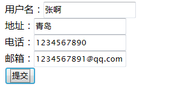
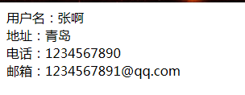

配置业务控制器，
<result name="error">/error/jsp</result>
当Action业务处理方法execute()方法的返回值为error时，跳转到error.jsp
 
package com.snowalker.action;
public class UserAction {
/**
* 用户名，地址，电话， 邮箱
*/
private String userName;
private String address;
private String telephone;
private String email;
public String getUserName() {
return userName;
}
public void setUserName(String userName) {
this.userName = userName;
}
public String getAddress() {
return address;
}
public void setAddress(String address) {
this.address = address;
}
public String getTelephone() {
return telephone;
}
public void setTelephone(String telephone) {
this.telephone = telephone;
}
public String getEmail() {
return email;
}
public void setEmail(String email) {
this.email = email;
}
public String execute() throws Exception {
if (userName.length() > 0 && address.equals("青岛")) {
return "success!";
} else {
return "error";
}
}
}
<?xml version="1.0" encoding="UTF-8" ?>
<!DOCTYPE struts PUBLIC
"-//Apache Software Foundation//DTD Struts Configuration 2.3//EN"
"http://struts.apache.org/dtds/struts-2.3.dtd">
<struts>
<!-- 开发阶段 可以进行调试 -->
<constant name="struts.devMode" value="true" />
<!-- action均配置在package中 -->
<package name="default" namespace="/" extends="struts-default">
<action name="user" class="com.snowalker.action.UserAction">
<!-- 配置execute()方法返回值与视图资源之间的映射关系 -->
<result name="success!">/result.jsp</result>
<result name="error">/error.jsp</result>
</action>
</package>
<include file="example.xml"/>
<!-- Add packages here -->
</struts>
<filter>
<filter-name>struts2</filter-name>
<filter-class>
org.apache.struts2.dispatcher.ng.filter.StrutsPrepareAndExecuteFilter </filter-class>
</filter>
<filter-mapping>
<filter-name>struts2</filter-name>
<url-pattern>/*</url-pattern>
</filter-mapping>
<form action="user.action" method="post">
用户名：<input type="text" name="userName"/><br/>
地址：<input type="text" name="address"/><br/>
电话：<input type="text" name="telephone"/><br/>
邮箱：<input type="text" name="email"/><br/>
<input type="submit" value="提交"/>
</form>
<%
out.print("输入的信息不符合要求，请重新输入！");
%>
用户名：${param.userName}<br/>
地址：${param.address}<br/>
电话：${param.telephone}<br/>
邮箱：${param.email}<br/>
本文对struts2的基本使用进行了讲解，对之后的学习有一定的指导作用。